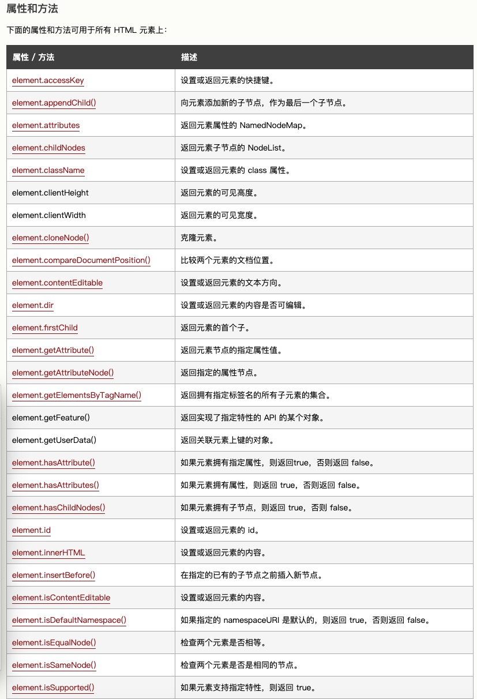
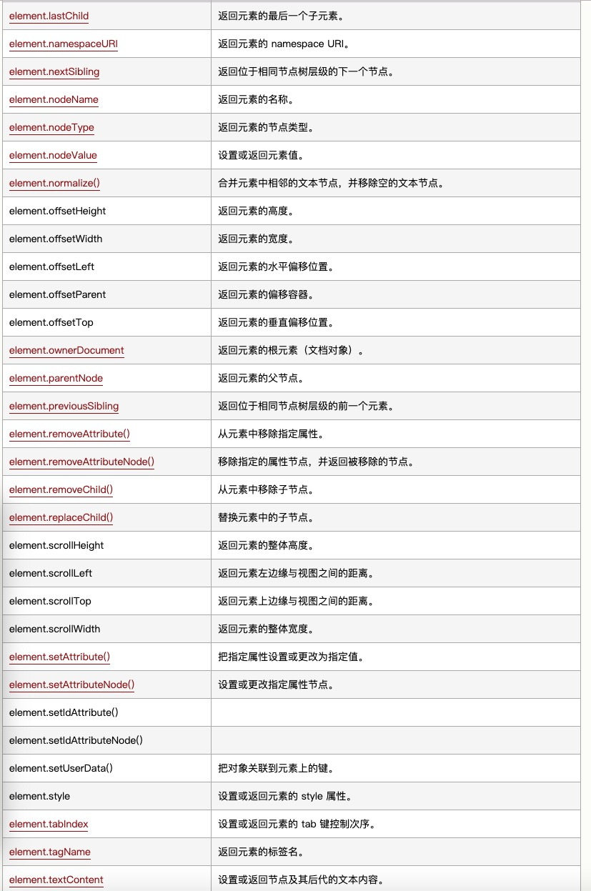
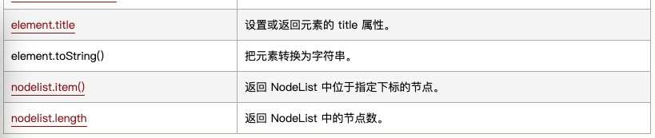
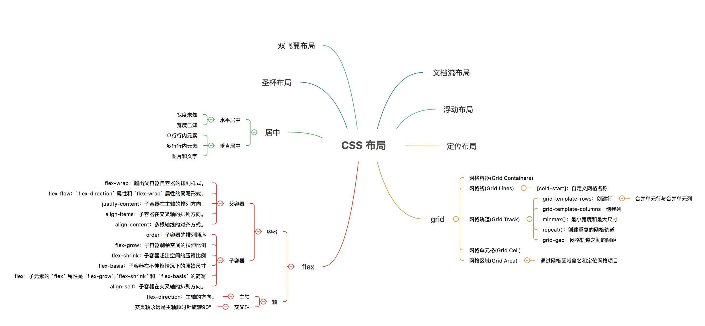
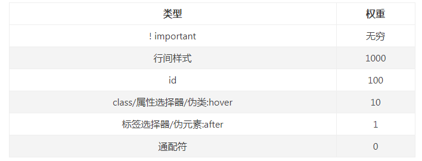
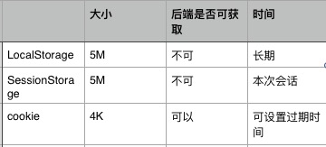
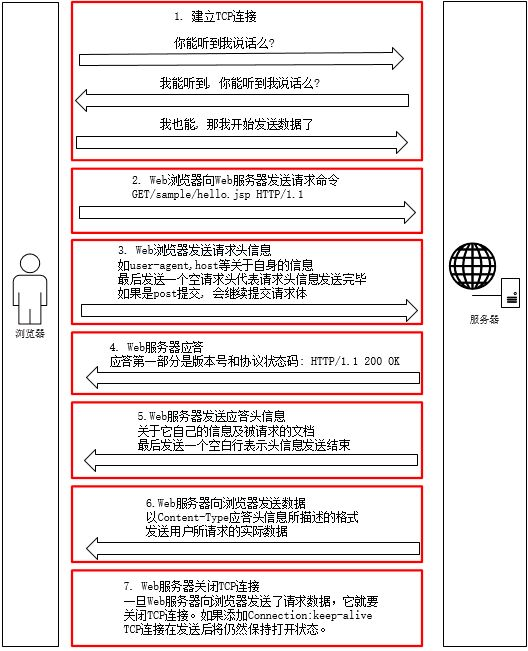
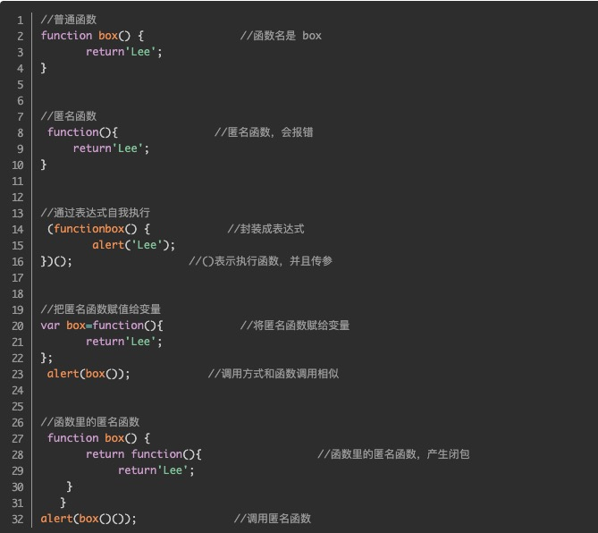

知识点
开发规范：
正确的开发流程Git-flowHTML DOM => Node NodeType Element NodeList
JavaScript中Element与Node的区别，children与childNodes的区别HTML DOM 节点
在 HTML DOM （文档对象模型）中，每个部分都是节点：
- 文档本身是文档节点
- 所有 HTML 元素是元素节点
- 所有 HTML 属性是属性节点
- HTML 元素内的文本是文本节点
- 注释是注释节点
Node?
Node(节点)是DOM层次结构中的任何类型的对象的通用名称，Node有很多类型，如元素节点，属性节点，文本节点，注释节点等，
Node有几个子类型：Element,Text, Attribute,RootElement,Comment,Namespace等,这里就是通过NodeType区分
| 节点类型 | NodeType |
|---|---|
| 元素element | 1 |
| 属性attr | 2 |
| 文本text | 3 |
| 注释comments | 8 |
| 文档document | 9 |
Node具有childNodes属性，获取到的列表就是NodeList类型
Element?
Element继承了Node类，也就是说Element是Node多种类型中的一种，即当NodeType为1时Node即为ElementNode，另外Element扩展了Node，Element拥有id、class、children等属性，当然也有childNodes属性，但是获取到的值不一样，children获取到的就是元素，childNodes获得的就是包含空白的Text的节点
元素(Element)和结点(Node)的区别，元素是一个小范围的定义，必须是含有完整信息的结点才是一个元素，例如<div>…</div>。但是一个结点不一定是一个元素，而一个元素一定是一个结点。
一个需要注意的地方就是，HTML文档两个标签之间的空白也是这棵树的一个节点（Text节点）。 <a> <b></b> <a> 中a有三个节点text, b , text
  前端面试难点集合
？盒子模型
盒模型分为W3C标准盒模型和IE盒模型
box-sizing: content-box(标准盒模型)（默认）
width = 内容的宽度 + border + padding = 100 + 10 * 2 + 10 * 2 = 140
height = 内容的高度 + border + padding100 + 10 * 2 + 10 * 2 = 140
box-sizing: border-box(IE盒模型)
width = 内容的宽度 = 100
height = 内容的高度 = 100
？页面布局方式

table布局：是老的布局方式，现在用的少；
float布局：浮动流灵活多变，会带来 “浮动高度塌陷”的问题（如果浮动元素的父元素没有设定高度，当其子元素浮动后，父元素就因为内部没有子元素撑起从而高度变为0），所以后续需要清除浮动等操作
position布局：是定位流，需要计算每一个元素的位置。不过不会像float那样影响其他元素。
flex布局：弹性布局，解决了float和position的问题，不过不兼容IE8以下
grid布局：flex只能用作一维布局，grid可做二维布局
圣杯布局
中间自适应
左边栏
右边栏
双飞翼布局
中间自适应
左边栏
右边栏
浮动布局
左边栏
右边栏
中间自适应
flex grid 布局
header
content
？浏览器加载页面的原理，怎样渲染dom
从耗时的角度，浏览器请求、加载、渲染一个页面，时间花在下面五件事情上：
- DNS 查询：域名分析，打开相应站点
- TCP 连接：三次握手
- HTTP 请求即响应：包含请求头，请求方法，请求地址等等
- 服务器响应：得到response
- 客户端渲染：浏览器开始渲染（浏览器渲染原理）
- 处理 HTML 标记并构建 DOM 树。
- 处理 CSS 标记并构建 CSSOM 树。
- 将 DOM 与 CSSOM 合并成一个渲染树。
- 根据渲染树来布局，以计算每个节点的几何信息。
- 将各个节点绘制到屏幕上。
HTML解析器解析的过程中如果发现脚本，就会发生阻塞渲染现象（不是停住不动，而是继续预加载），停止渲染直到JS执行完毕；
解析过程中发现存在css资源时，也会发生阻塞，渲染暂停，直至CSSOM构建完毕；css的优先级比js高，就是等CSSOM构建完毕JS继续执行；当然JS有defer延迟,async异步
解析完成后，浏览器引擎会通过DOM Tree和CSS Rule 来构造Rending Tree，然后计算每个节点信息，进行layout，最后通过调用操作系统Native GUI的API绘制出来。
回流：当我们对 DOM 的修改引发了 DOM 几何尺寸的变化， 浏览器需要重新计算元素的几何属性（宽，高等），然后再将计算的结果绘制出来，这个过程就是回流（也叫重排）
重绘：当我们对 DOM 的修改导致了样式的变化、却并未影响其几何属性时，浏览器不需重新计算元素的几何属性、直接为该元素绘制新的样式。
有回流肯定有重绘，那么回流所需的成本就比较高，引起的原因可能有如下几点：
- 添加或删除课件的DOM元素
- 元素尺寸改变
- 内容变化
- 浏览器窗口尺寸改变
- 计算 offsetWidth 和 offsetHeight 属性
- 设置 style 属性的值
?怎样避免重绘和回流
- 使用transform替代top
- 使用visibility替代display:none
- 尽量不要使用table布局
- css从右到左的匹配查找，避免层级过多
css权重问题
？浏览器性能优化
- JS 优化： <script> 标签加上 defer 属性 和 async 属性 用于在不阻塞页面文档解析的前提下，控制脚本的下载和执行
- defer 属性： 用于开启新的线程下载脚本文件，并使脚本在文档解析完成后执行
- async 属性： HTML5 新增属性，用于异步下载脚本文件，下载完毕立即解释执行代码
- CSS 优化： <link> 标签的 rel 属性 中的属性值设置为 preload 能够让你在你的 HTML 页面中可以指明哪些资源是在页面加载完成后即刻需要的，最优的配置加载顺序，提高渲染性能
- 减少http资源的请求，或者合并资源，这可能也是打包工具的运用到的一点
- 合并图片：这也是雪碧图运用的一点
- http缓存：cache manifest文件缓存
- cookie,LocalStorage, SessionStorage存储
- 代码压缩
- 图片懒加载，只加载首屏，滚动的时候再继续加载后续图片
？浏览器性能监听
？浏览器的存储
？最新的 Web 开发标准，标准化，可用性
？浏览器的兼容性
-o-transform:rotate(7deg); // Opera-ms-transform:rotate(7deg); // IE
-moz-transform:rotate(7deg); // Firefox
-webkit-transform:rotate(7deg); // Chrome
transform:rotate(7deg); // 统一标识语句
？HTTP请求过程
HTTP协议就是基于TCP/IP协议模型来传输信息的。
通俗来讲，他就是计算机通过网络进行通信的规则，是一个基于请求与响应，无状态的，应用层的协议，常基于TCP/IP协议传输数据。
链路层：通常包括操作系统中的设备驱动程序和计算机中对应的网络接口卡。
网络层：处理分组在网络中的活动，包含IP、ICMP、IGMP协议。
传输层：为两台主机上的应用程序提供端到端的通信。TCP采用了超时重传、发送和接收端到端的确认分组等机制。
应用层：决定了向用户提供应用服务时通信的活动，http协议，HTTP客户机发起一个与服务器的TCP连接， 一旦连接建立，浏览器（客户机）和服务器进程就可以通过套接字接口访问TCP(网络套接字是IP地址与端口的组合)
http请求报文
一个HTTP请求报文由请求行（request line）、请求头部（header）、空行和请求数据4个部分组成
-
请求行（request line）
- 请求方法
- GET
- POST
- PUT
- DELETE
- PATCH
- HEAD
- OPTIONS:预检请求，查看当前服务器支持哪些通信选项，预检请求报文中的 Access-Control-Request-Method 首部字段告知服务器实际请求所使用的 HTTP 方法；Access-Control-Request-Headers 首部字段告知服务器实际请求所携带的自定义首部字段
- TRACE
-
请求地址
URL:统一资源定位符
组成： <协议>：// <主机>： <端口>/ <路径>
-
协议版本
HTTP/主版本号.次版本号，常用的有HTTP/1.0,HTTP/1.1和HTTP2.0
-
请求头部（header）
请求头部为请求报文添加了一些附加信息，由“名/值”对组成，每行一对，名和值之间使用冒号分隔。
-
空行
请求头部的最后会有一个空行，表示请求头部结束，接下来为请求数据，这一行非常重要，必不可少。
-
请求数据
下面是post请求，get请求没有请求数据。
POST /index.php HTTP/1.1 请求行
Host: localhost
User-Agent: Mozilla/5.0 (Windows NT 5.1; rv:10.0.2) Gecko/20100101 Firefox/10.0.2 请求头
Accept: text/html,application/xhtml+xml,application/xml;q=0.9,/;q=0.8
Accept-Language: zh-cn,zh;q=0.5
Accept-Encoding: gzip, deflate
Connection: keep-alive
Referer: http://localhost/
Content-Length：25
Content-Type：application/x-www-form-urlencoded
空行
username=aa&password=1234 请求数据
http响应报文
HTTP响应报文主要由状态行、响应头部、空行以及响应数据四个部分组成。
-
状态行
- 协议版本：于请求报文一致
-
状态码：分为3位数字
- 1xx：指示信息--表示请求已接收，继续处理
- 2xx：成功--表示请求已被成功接收、理解、接受
- 3xx：重定向--要完成请求必须进行更进一步的操作,301:强制缓存302：协商缓存
- 4xx：客户端错误--请求有语法错误或请求无法实现
- 5xx：服务器端错误--服务器未能实现合法的请求
- 状态码描述：对状态码的描述
-
响应头部
与请求头部类似，为响应报文添加了一些附加信息
-
空行
-
响应数据
下面是一个响应报文的实例：
HTTP/1.1 200 OK 状态行
Date: Sun, 17 Mar 2017 08:12:54 GMT 响应头部
Server: Apache/2.2.8 (Win32) PHP/5.2.5
X-Powered-By: PHP/5.2.5
Set-Cookie: PHPSESSID=c0huq7pdkmm5gg6osoe3mgjmm3; path=/
Expires: Thu, 19 Nov 1981 08:52:00 GMT
Cache-Control: no-store, no-cache, must-revalidate, post-check=0, pre-check=0
Pragma: no-cache
Content-Length: 4393
Keep-Alive: timeout=5, max=100
Connection: Keep-Alive
Content-Type: text/html; charset=utf-8
空行
<html> 响应数据
<head>
<title>HTTP响应示例<title>
</head>
<body>
Hello HTTP!
</body>
</html>
TCP四次挥手，断开连接
当客户端和服务器通过三次握手建立了TCP连接以后，当数据传送完毕，肯定是要断开TCP连接的啊。那对于TCP的断开连接，这里就有了神秘的“四次分手”。
TCP协议是一种面向连接的、可靠的、基于字节流的运输层通信协议。
TCP是全双工模式，这就意味着，当主机1发出FIN报文段时，只是表示主机1已经没有数据要发送了，主机1告诉主机2，它的数据已经全部发送完毕了；
但是，这个时候主机1还是可以接受来自主机2的数据；当主机2返回ACK报文段时，表示它已经知道主机1没有数据发送了，但是主机2还是可以发送数据到主机1的；
当主机2也发送了FIN报文段时，这个时候就表示主机2也没有数据要发送了，就会告诉主机1，我也没有数据要发送了，之后彼此就会愉快的中断这次TCP连接。
http和https的区别
HTTP超文本传输协议是一种使用明文数据传输的网络协议，连接很简单，是无状态的；数据什么的都是可见的;端口是80
HTTPS协议是对HTTP的一种升级，给数据进行了ssl加密处理;需要到ca申请证书；端口是443
HTTPS服务端和客户端之间的所有通讯，都是加密的(RSA加密算法)，具体讲，是客户端产生一个对称的密钥，通过server 的ca证书来交换密钥，一般意义上的握手过程
？跨域的原理 同源性
浏览器的同源策略：（IE特殊）
如果两个页面的协议，主机和端口（如果有指定）都相同，则两个页面具有相同的源
源的继承：在页面中用 about:blank 或 javascript: URL 执行的脚本会继承打开该 URL 的文档的源，因为这些类型的 URLs 没有明确包含有关原始服务器的信息。
可以实现跨域的方式：
- script标签嵌入跨域脚本
- link标签嵌入css样式跨域
- img标签引入跨域的资源
- video，audio嵌入多媒体资源
- @font-face实现字体的跨域
- frame，iframe载入的跨域资源
如何允许跨域：
使用CORS允许跨域资源访问：CORS是一种机制，它使用额外的 HTTP 头来告诉浏览器，让运行在一个 origin (domain) 上的Web应用被准许访问来自不同源服务器上的指定的资源。
使用JsonP允许跨域资源访问：借助script标签，引入jsonp文件，通过callback的形式实现跨域，不过只支持get请求
使用Nginx代理
跨源脚本api访问使用window window.blur,window.close,window.focus,window.postMessage,window.location,window.opener,window.parent等
跨源数据存储访问：Cookies
不管使用哪个协议（HTTP/HTTPS）或端口号，浏览器都允许给定的域以及其任何子域名(sub-domains) 访问 cookie。设置 cookie 时，你可以使用Domain，Path，Secure，和Http-Only标记来限定其访问性。读取 cookie 时，不会知晓它的出处。 即使您仅使用安全的https连接，您看到的任何cookie都可能使用不安全的连接进行设置。
使用cookie可做带身份凭证的接口请求Access-Control-Allow-Origin设为允许的域名，将cookie信息带入
只有cookie的domain和path与请求的URL匹配才会发送这个cookie
如何阻止跨域：使用CSRF阻止跨域访问。资源不要采用上述可嵌入的方式
url src href rel有什么区别
url: 统一资源定位符,互联网访问资源用的标准， 类似于： 协议://用户名:密码@子域名.域名.顶级域名:端口号/目录/文件名.文件后缀?参数=值#标志
src: 会将资源下载到本地，应用到项目中，例如脚本script或者img或者frame等；
href: 超文本引用,是将资源和当前页面建立联系，可跳转页面，也可以执行JavaScript表达式、方法和函数的列表
rel: 用于定义链接的文件和HTML文档之间的关系，例如StyleSheet的意思就是样式调用
？webview的原理
webview就是用来显示页面的一个特殊view，多用于移动端，移动端目前都内置有webkit或者其他内核的浏览器，可直接显示H5页面；
原生和H5交互的话一般依赖webview，webview通过loadUrl形式显示页面，定义一些方法绑定到global，H5通过window.xxxfun()方式去调用
？H5主要新增元素
- 用于绘画的 canvas 元素
- 用于媒介回放的 video 和 audio 元素
- 对本地离线存储的更好的支持
- 新的特殊内容元素，比如 article、footer、header、nav、section
- 新的表单控件，比如 calendar、date、time、email、url、search
？CSS3主要新特性
- 动画
- 背景渐变
- 2D、3D转换
- 图片效果
- 盒模型
- 多列
伪类:hover,:active等
伪元素:before :after,:first-line ,:last-line
？overflow：hidden为什么可以清除浮动
overflow.hidden会触发BFC.BFC的意思是，我这个元素里面的子孙元素，不会影响外部元素的布局。
所以从BFC的本意来说，必须给浮动元素撑出高度，使得后续的元素无法跟浮动元素共享同一水平位置，看上去就是 clear both 的效果了
？Promise
promise是异步编程的一种解决方案。替代原生的各种回调函数和事件。
promise有三种状态，pending（进行中），fulfilled（成功），rejected（失败）；
状态从pending到fulfilled，或者pending到rejected都是resolved，状态不会再改变。也就是说执行了resolve()方法之后状态就不会改变了；
其构造函数接受一个函数作为参数，这个函数的两个参数分别是resolve和reject两个函数，在各个函数里面处理异步操作结果。
也可用promise的实例.then((resolvedValue) => {}, (rejectedError) => {})的方式获得异步操作结果，resolve()方法执行之后就是then()方法接收的第一个参数方法； reject方法就是then()方法里面的接收的第二个参数，最好的方式是用catch()去接收报错信息，catch不仅可以接收promise的报错，也能抓取之前代码里面的错误，比如then里面的报错。
Promise.all() 方法用于将多个 Promise 实例，包装成一个新的 Promise 实例.
Promise.all接收的参数必须是一个数组，数组里面都是promise实例，并且必须所有的子promise都返回fulfilled，该promise才会是fulfilled，否则只要有一个reject就是rejected
Promise.race()方法同样是将多个 Promise 实例，包装成一个新的 Promise 实例。
Promise.all接收的参数必须是一个数组，数组里面都是promise实例，但是和all不一样的是只要子promise中有一个实例改变了状态，该promise状态就会跟着改变了
Promise.resolve() 有时候需要将现有对象转为Promise对象，状态为resolved,将传入的参数可以是promise也可以是含有then的对象，还可以不带任何参数等等。执行then方法
Promise.reject() 返回一个新的Promise的对象，状态为rejected.参数和resolve一样，但是如果是thenable的话会直接将thenable返回，而不是执行then方法。
？async await
async 是Generator函数的语法糖，表示这里有异步操作，需要结合await，告知紧跟后面的表达式这里需要等待结果
async函数返回一个Promise对象，那就可以then()，按照上面promise的流程走
await命令后面是一个 Promise 对象，返回该对象的结果。如果不是 Promise 对象，就直接返回对应的值
fetch和axios，ajax的区别
fetch：全局量 window 的一个方法，用promise来处理结果；ajax是XMLHttpRequest请求，open，send，最后得到response， ajax.onreadystatechange=function (){}
fetch不会主动传送cookie，需要配置属性credentials: ’same-origin'
fetch比ajax更加方便
？js原型链，浅拷贝深拷贝，判断变量是否是function
深拷贝，浅拷贝
js中的两种变量类型，即值类型（数值、布尔值、null、undefined）和引用类型（对象、数组、函数）。深拷贝和浅拷贝只针对引用类型(函数是按照值传递的)。
- 基本数据类型的特点：直接存储在栈(stack)中的数据
- 引用数据类型的特点：存储的是该对象在栈中的引用，真实的数据存放在堆内存里
浅拷贝只复制指向某个对象的指针，而不复制对象本身，新旧对象还是共享同一块内存。但深拷贝会另外创造一个一模一样的对象，新对象跟原对象不共享内存，修改新对象不会改到原对象。
赋值操作会导致两个变量联动，一个改变另外一个跟着改变，赋值操作是直接将原始对象在栈中的地址赋过去了；浅拷贝是按位拷贝对象，创建一个新的对象。
深拷贝方式：
- JSON.parse(JSON.stringify(obj))变成按值传递：缺点是会忽略undefined或者function
- 递归创建一个新对象 遍历要拷贝的对象属性添加给新对象
- lodash库里面的deepClone
浅拷贝的方式：
- 通过{...}结构的方式
- Object.assign({},obj)
- Array.prototype.concat()这里给空参数
- Array.prototype.slice()这里给空参数
浅拷贝只解决了第一层的问题，如果接下来的值当中还有对象{}的话，改变第一层的值还是会影响原数据有问题，这时候需要深拷贝。
按值传递：按值传递是针对简单类型的，值类型传递就是两个变量，毫无关系
按址传递：按址传递是针对引用类型，对象，数组。
引用类型就是两个变量，但是内存地址是一个。
引用类型等于复制指针。
深拷贝实现原理：for in遍历对象属性，hasOwnProperty方式去添加到新的对象上
？匿名函数和闭包
匿名函数就是没有函数名的函数，最灵活的对象，不会造成命名冲突。  闭包的好处就是保证作用域不会相互污染；？数据可视化工具
Echarts, HighCharts，canvas生成一张图片
var image = new Image();
var c = document.getElementById("myCanvas");
var ctx = c.getContext("2d");
var img = document.getElementById("scream");
ctx.font = "10px Arial";
function createImg(name, zuowei, color) {
// 姓名
ctx.fillText(name, 93, 373);
ctx.fillText(name, 393, 370);
// 座位号
ctx.font = "bold 20px Arial";
ctx.fillText(zuowei, 216, 350);
ctx.fillText(zuowei, 393, 350);
// 座位颜色
ctx.font = "bold 20px Arial";
ctx.fillText(color, 264, 350);
ctx.fillText(color, 441, 350);
// 生成图片
image = c.toDataURL("image/png");
return image;
}
ctx.drawImage(img, 0, 0, 550, 520);
var src = createImg(name, zuowei, color);
$('#box').attr('src', src);
？webpack的项目构建
按照路由ensure按需加载；
各种loader编译，可选择某些文件不需要编译；
tree shaking去除不需要的代码；
各种插件支持：浏览器的支持等
？Vue相关性能优化
路由类型hash history 中pushState, replaceState两个方法
history中pushState方法和replaceState方法类似，pushState会在浏览器历史记录里面添加一项；replaceState则会直接修改本条目；与window.onpopstate相互合作。需要注意的是，调用 history.pushState() 或者 history.replaceState() 不会触发 popstate 事件。 opstate事件只会在浏览器某些行为下触发， 比如点击后退、前进按钮(或者在JavaScript中调用history.back()、history.forward()、history.go()方法)。
pushState不会立即刷新页面，
history.pushState({}, "");
window.onpopstate = function(event) {
//这里可以监听到浏览器的返回事件，并做你想做的事情，
//例如：跳转到另一个网页
location.href = "https://www.baidu.com";
};
？ES6
数组合并
...解构
concat连接
Array.from()和[].slice.call()均可以返回一个数组Event Loop
js执行机制分为宏任务和微任务，正常的同步代码是宏任务，js会将微任务或者异步任务放到另外一个异步任务栈里面，当宏任务执行结束，会从异步栈里面拿一个异步任务出来执行；
宏任务包括setTimeout,setInterval,同步代码；微任务包括异步，promise等
垃圾回收机制
js的垃圾回收机制是依从“可达性”，当它发现一个对象的时候，会对这对象做一个标记，然后继续遍历，查看该对象是否有被其他对象引用，如果有，再将子对象标记，以此类推。
当js发现有些对象没有被引用，也就是不可达之后就会销毁该对象。